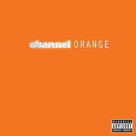
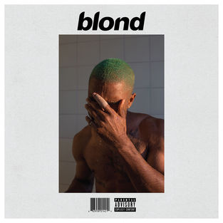
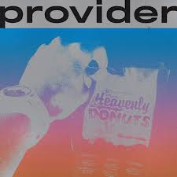
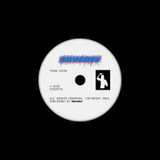
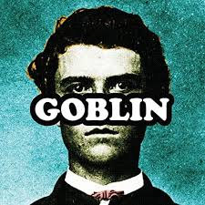
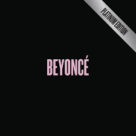
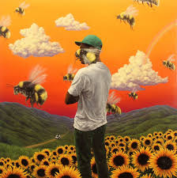
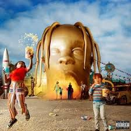

Frank Ocean é um dos artistas mais influentes da música contemporânea. Conhecido por sua voz marcante, letras profundas e estilo inovador, ele conquistou milhões de fãs ao redor do mundo. Sua música mistura R&B, soul, pop alternativo e hip hop, criando um som único que marcou uma geração.
Frank Ocean nasceu como Christopher Edwin Breaux em 28 de outubro de 1987, na cidade de Long Beach, Califórnia, Estados Unidos. Ainda jovem, mudou-se para Nova Orleans, onde desenvolveu seu interesse pela música. Após o furacão Katrina destruir seu estúdio de gravação, ele mudou-se para Los Angeles para perseguir sua carreira artística. Antes da fama, Frank trabalhou como compositor para diversos artistas famosos. Em 2011, lançou a mixtape "Nostalgia, Ultra", que recebeu grande reconhecimento da crítica e do público. Desde então, tornou-se um dos nomes mais respeitados da indústria musical.

Primeiro Projeto de grande destaque de Frank Ocean. A mixtape mistura R&B, soul e hip hop, apresentando letras emocionais sobre amor, juventude e experiências pessoais. Foi o trabalho que revelou seu talento ao grande público.

Primeiro álbun de estúdio de Frank Ocean. O disco aborda temas como amor, solidão, dinheiro e identidade, combinando diferentes estilos musicais com uma produção sofisticada. Foi amplamente elogiado pela crítica e venceu um Grammy.
Álbum visual lançado de forma experimental. Apresenta uma sonoridade mais atmosférica e introspectiva, com foco em transições suaves e experimentação musical. É considerado um projeto importante na evolução artística de Frank Ocean.

Considerado o álbum mais influente da carreira de Frank Ocean. Com letras profundas e produção inovadora, aborda memórias, relacionamentos, amadurecimento e identidade. O álbum recebeu aclamação mundial e é frequentemente citado como um dos melhores da década de 2010.
Faixa do albun
Uma das canções mais emocionais de frank ocean. A letra fala sobre amor perdido, saudade e a dificuldade de seguir em frente depois de uma separação.
Música inytrosperctiva que explora temas como juventude, crescimento pessoal e lembranças marcantes. É conhecida por sua atmosfera melancólica e poética.
Canção delicada e emocionante que transmite uma mensagem de despedida e carinho. A música fala sobre desejar felicidade e sucesso para alguém importante.
Faixa do álbun
Uma das músicas mais ambiciosas da carreira de Frank Ocean. A canção apresenta uma narativa extensa que conectta temas históricos, amor poder e identidade.
Faixa muito elogiada de
Canção introspectiva que trata dde independência, solidão e autoconhecimento. Sua produção minimalista destaca a profundidade da letra.
Música reflexiva que explora dúvidas existenciais, sonhos e busca por propósitos. É considerada uma das composições mais pessoais de Frank Ocean.
Faixa do álbum
Priemiro single de destaque de Frank Ocean. A música apresenta uma mistura de R&B alternativo e letras introspectivas, explorando temas como solidão, excessos e desconexão emocional.
Um dos maiores sucessos de sua carreira. A canção fala sobre amor, saudade e vulnerabilidade, destacando a capacidade de Frank Ocean de transmitir emoções profundas.

Single lançado após o álbum
Canção que discute identidade,dualidade e autoconhecimento. É considerada uma das músicas mais importantes da sua sua fase pós-blonde.
.jpeg)
Single com influências eletrônicas e experimentais. A faixa apresenta uma sonoridade moderna e minimalista, característica do estilo inovador de Frank Ocean.
.jpeg)
Música que combina elementos de hip hop e R&B alternativo, trazendo reflexões sobre fama, sucesso e sua trajetória artística.

Lançado como single com versões alternativas e remixes. A música possui uma sonoridade melancólica e aborda temas relacionados ao amor e á passagem do tempo.

Cançãomcom influências do pop latino e do R&B. A letra fala sobre vulnerabilidade emocional e dificuldades em realicionamentos amorosos.
Embora Frank Ocean seja mais conhecido por seus álbuns e singles, ele também lançou projetos especiais, versões alternativas e faixas exclusivas que ajudaram a consolidar sua reputação como um dos artistas mais criativos e influentes da música contemporânea.

A música conta a história de uma paixão obsessiva e dos sentimentos intensos por álguem.

A música quetsiona poder, religião, moralidade e liberdade na sociedade moderna.

Celebra a superação, o sucesso e a realização do sonho americano.

Fala sobre amor, união e a força que duas pessoas têm quando permanecem juntas.

Trata de crescimento pessoal,sucesso e gratidão pelas conquistas alcançadas.

Aborda ambição, fama e a busca por novos objetivos.
Antes de se tornar um cantor ,umdialmente conhecido, Frank Ocean trabalhou como compositor para diversos artistas. Suas composições abordavam temas como amor, saudade, crescimento pessoal e autoconhecimento. Esse período foi importante para desenvolver seu talento como escritor, que mais tarde se tornaria uma das características mais marcantes de sua carreira musical. Algumas de suas composições são:
Fala sobre crescimento pessoal, confiança e acreditar que é possível alcançar objetivos maiores.
Retrata a saudade e a dor de estar longe de alguém que se ama.
Fala sobre encontrara algo ou alguém que dá verdadeiro sentido á vida.
Ao longo de sua carreira, Frank Ocean recebeu diversos prêmios impoetantesbda indústria musical, sendo reconhecido por suas letras profundas, inovação artística e influência no R&B contemporâneo. Os prêmios são:
Frank ganhou 2 prêmios Grammy, a maior premiação nos Estados Unidos:
Contemporâneo pelo álbum Channel Orange

pela música No Churc in the Wild, ao lado de Jay-Z, Kanye West e The-Dream.

Além das vitórias, ele também foi indicado a categorias importantes como Álbum do Ano, Gravação do Ano e Artista Revelação.
Frank Ocean venceu o Brit Award de Melhor Artista Masculino Internacional, uma das maiores premiações musicais do Reino Unido

Seu álbum
Além dos prêmios, ele é frquentemente citado como uma das maiores influências da música do século XXI.
Em 2012, publicou uma carta aberta falando sobre um relacionamento amoroso com outro homem, tornando-se uma figura importante para a representatividade LGBTQIA+ na música.
Em 2015, Frank Ocean alterou legalmennte seu nome de Christopher Breaux para Christopher Francis Ocean.
Frank tem grande interesse por automóveis, tema que aparece em várias de suas músicas e entrevistas.
Diferente de muitos artistas famosos, Frank raramente compartilha detalhes de sua vida pessoal nas redes sociais.
Ele tem grande influência na música atual. Artistas como SZA, Billie Eilish e The Weeknd ja foram comparados ao estillo inovador e emocional de Frank Ocean.
Frank é conhecido por esconder significados e referências em suas letras, o que faz com que muitos fãs passem anos analisando suas músicas.
Frank Ocean redefiniu os limitesm do R&B moderno ao combinar experimentação sonora, poesia e autencidade em suas obras. Sua influência pode ser vista em diversos artistas contemporâneos, e seu trabalho continua sendo estudado e admirado por fãs e críticos ao redor do mundo.